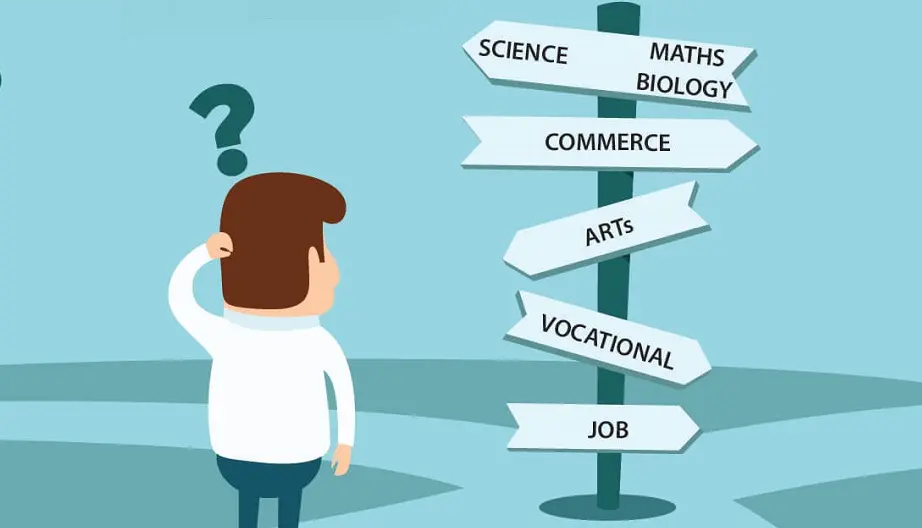

What after 10th?Are you confused?

It isn't easy to decide on career option that will determine the rest of your life for you, especially at
the tender age of 16 or 17. It does not help that often even parents are left confused about the right advice to
give. The confusion a student faces is huge and varied in nature.
- Should I continue with Science and opt for a B.Sc. degree?
- Should I switch to Commerce?
- Should I opt for a three-year regular course?
- Should I go for a correspondence degree?
- Should I go for professional careers such as CA, CS or Journalism?
If you have scored less than expected in your class 10, there is no need to panic or become anxious. The
fact of that matter is that in today's age of self-starters the number of options open to you are varied and
many. It is not advisable to make hasty, unplanned decisions dues to peer/parental pressure. It's important to
pursue a field you are truly passionate about.
Mistakes students make while choosing their career after 10th
- 1. Following the crowd/friends
- This is one of the most common mistakes which most of the students unknowingly make. Many students just take
up any stream because their friends have decided to take that stream. This can turn out to be the worst
decision of their lives.
- It is necessary that you chose the stream which you are most passionate about rather than doing what most of
the students are doing.
- 2. Parental/Societal pressure
- Let’s look at a common scenario.
- You: Dad, I want to take up Arts stream
- Dad: There is no future in the Arts stream. You have to take up science. Look at Sharma Jis son. He had
taken up science stream and he is doing very well in life.
- I am sure many students would have faced this situation. I am sure, that many parents would have given the
examples of some Sharma or Gupta to influence the decision of their child. This can lead to a flawed career
decision.
- 3. Lack of knowledge
- There are a plethora of career options after 10th. If we go back 10-20 years ago, there were very fewer
career options to choose from. But now the scenario is completely different. There are many career options
available and with the help of proper career guidance and career counselling, you can see the light at the
end of the tunnel.
What are the career options after 10th class?
Picking the right career option after 10th is probably the most important decision of your life and
should not be taken in a hurry. Let us see how you can choose the right career path after 10th:
- Intermediate (2years)
- After 10th class, the student can select subject groups like PCM, PCB, PCMB, Commerce with Maths,
Commerce without Maths. Post completion of 12th class, one can do graduation in multiple disciplines
based on the subject selection.
- Polytechnic
- After 10th class, students can do polytechnic courses like Mechanical, Civil, Chemicals, Computer,
Automobile. Polytechnic colleges offer diploma courses for a duration of 3 years, 2 years and also 1
year.
- ITI
- (Industrial Training Institutes)After 10th class, students can do ITI courses for employment like
Mechanical, electrician, electrical.
- Paramedical
- After 10th class, students can do paramedic courses like DMLT (Diploma in Medical Laboratory
Technology), DOA(Diploma in Ophthalmic Assistant), DOT (Diploma in Ophthalmic Assistant).
- Short term courses
- After 10th class, students can do short term courses like Tally, DTP, Graphics.